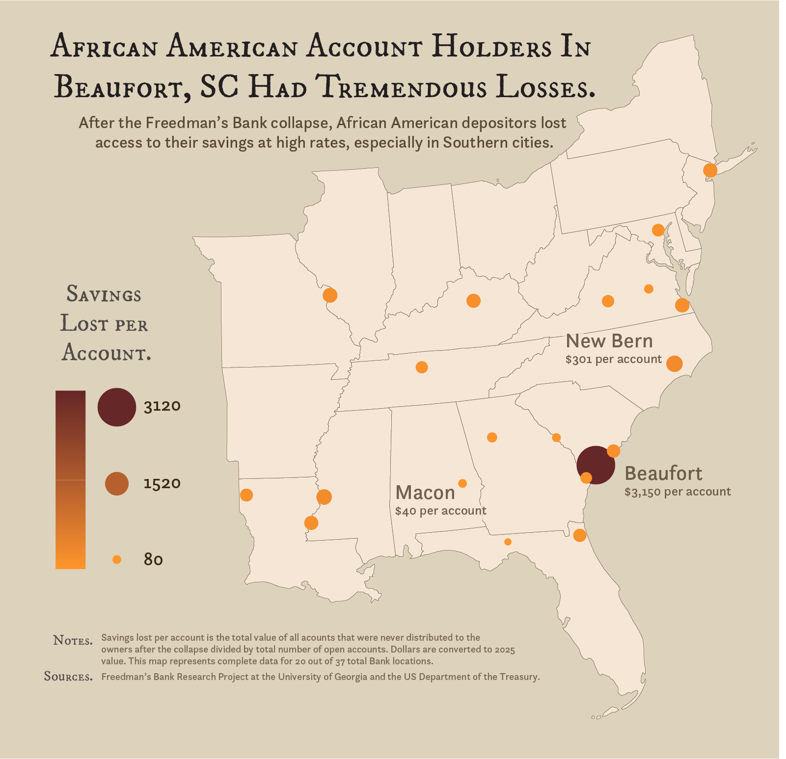
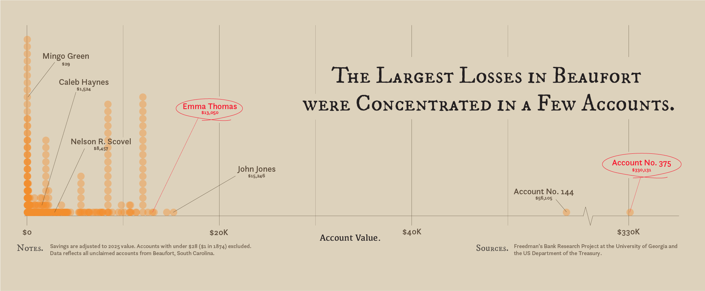

By: Calvin Kirk
May 1, 2025
With the passage of the 13th amendment, over 200 years of slavery in the United States came to an end, freeing nearly 4 million enslaved African Americans but leaving them with few opportunities to support themselves. Over the next 10 years, the federal government embarked upon a project known as "Reconstruction," in which it imposed massive institutional reform across the South to incorporate the newly freed population into American society.
One central component on Reconsturction was the Freedman’s Savings and Trust Company, commonly referred to as the Freedman’s Bank. After being signed into law by President Lincoln in 1865, the Bank operated as a private corporation dedicated to empowering African Americans to achieve financial stability and independence. At its peak, the bank had 37 branches. Although larger populations further North, such as New York City and Baltimore, held the largest savings in total, the majority of branches were spread across the South. Small and large accounts owned by over 70,000 account holders summed to millions in savings (note: all savings in this piece are adjusted to 2025 dollars).
Across the 20 branches and 43,000 accounts for which the U.S. Department of the Treasury has public records, there were over $53.5 million dollars saved in the Freedman’s Bank in 1874. The bank itself was run by African Americans employees, including at the cashier level—the top officials at each branch. Each account would have been impossible to imagine 10 years earlier, and each account represented a person’s investment in a brighter future for themself. There was a sense of immense pride associated with opening a savings account, no matter the size.
In the aftermath of the Financial Panic of 1873, under poorly managed investments by white trustees in Washington, this progress came grinding to a halt. Under duress from drained reserves after multiple bank runs, the Freedman’s Bank closed in June 1874. The Department of the Treasury attempted to record the values of all accounts to pay them out in the future, but in the end, 44% of accounts were never repaid. Over just a few months, African Americans lost $3.6 million, decimating the short-lived trust between African Americans and financial institutions.
When looking at the proportion of savings lost per account across branches, Beaufort, South Carolina is the clear outlier. On average, account holders in Beaufort lost $3,150, far greater than any other branch. Even in Macon, Alabama, one of the branches with the smallest losses per account, $40 per account were lost, which was a substantial toll on the newly freed African American population. After centuries of violence, this was a brutal reminder of the institutional plunder of the wealth and labor of African Americans.
To understand Beaufort’s substantial losses, we must first understand its history as the center of and model for Reconstruction. In November 1861, at the Battle of Port Royal, the Union army drove Confederates and plantation owners far inland. In the weeks that followed, formerly enslaved African Americans took control of the region. They began to work for wages under a Treasury Department program designed to produce goods for the Union army, referred to today as the Port Royal Experiment.
When plantation labor was compensated with wages, a regional economy began to take shape with the creation of local businesses and different forms of employment, such as drivers, cooks, and nurses. General Hunter, against the wishes of the federal government, issued a local emancipation proclamation and set up a regiment of African American soldiers. Later, the service of African Americans would be one of the primary justifications for extending citizenship. By the spring of 1862, abolitionist educators from the north arrived in Beaufort to set up schools, which served as a model for schools setup by the Freedman’s Bureau across the South after the war. The Beaufort District Tax Auctions began in 1863, and formerly enslaved folks began to buy small parcels of land, many of which were located on the same plantations to which they had been enslaved.
Beaufort and the broader Sea Islands region began the process of empowering African Americans five years before the rest of the South. By 1874, the additional half decade of progress was reflected in the abnormally high savings, but it was also reflected by catastrophic losses. The failures of the Reconstruction era hit especially hard in the regions that had most benefited from its successes.
Of the almost 1,000 open accounts in Beaufort, around 400 lost their savings forever. The high losses per account were primarily driven by two unknown accounts: Account #144, valued at $56,105, and Account #375, valued at $330,131. It is difficult to know much about the account holder for certain, but it is possible it belonged to Robert Smalls, a war hero and Reconstruction era politician that became famous for purchasing the entire mansion and property of Henry McKee, who had once enslaved him. The 1870 Census put his family net worth at around $200,000, far greater than any other account in the region and making him a plausible candidate for the owner of Account #375.
Even if the two unknown account holders drove the difference between Beaufort and other branches, each loss was a substantial setback to a real person trying to build a life for themselves and their families. The Reconstruction reforms and backsliding can feel abstract or distant, but it is important to remember that it had tangible impacts on real Americans.
Consider Emma Thomas, who was born in 1855 or 1856 in Pickens, South Carolina, much farther inland than Beaufort. Growing up so distantly from the coast, Emma would not have been affected by the Port Royal Experiment during the early 1860s. However, by 1870, she had moved to Laurens County, South Carolina, and opened an account at the Freedman Bank in Beaufort, allowing her to build wealth and plan her future. By 1874, she had amassed $13,050. She was one of the biggest account holders in Beaufort.
Emma Thomas was also one of the 17,734 account holders in the public records that never recovered the money she had saved. Even in the face of adversity, Emma did not let the failure of the state determine her future. In 1875, she married John Marion Nations, and they had at least 6 sons and 6 daughters, eventually moving back to Pickens. At the age of 64, on Valentine’s Day in 1920 (Feb 14), she passed away.
Emma still rests in Pickens today. Similarly to many account holders, her bank records are one of the primary ways for her ancestors to trace their family lineage. As academics and government officials digitize and catalogue buried records from our history, it becomes the responsibility of historians and everyday people to use the tools at our disposal to humanize our history and connect it to our present.
As I reflect on the details I uncovered about Beaufort and the Freedman’s Bank, I am reminded that the radical progress and institutional changes during Reconstruction occurred within only 10 years. I am reminded how quickly that progress was undone during a period of financial crisis. And more than anything, I am reminded that the lives of real people, like Emma, were irreversibly altered by these events. Historical data, even when small or incomplete, is a window into the lives of people with stories that are worth knowing.
Footnotes:
1. A huge thank you to Reuben Fischer-Baum and the DATA 1500 Spring 2025 section, especially Sita Pawar! This would not have come together without their extremely helpful feedback and insights.
2. Data on Freedman's Bank records comes from the U.S. Treasury, and it was put together by Professors Malcolm Wardlaw and Virginia Traweek at the Freedman's Bank Research project at the University of Georgia.
3. Information on Emma Thomas and the names of other account holders comes from Family Search.
4. Shapefiles to draw the map came from the U.S. Census Bureau and inflation calculations come from this inflation calculator.